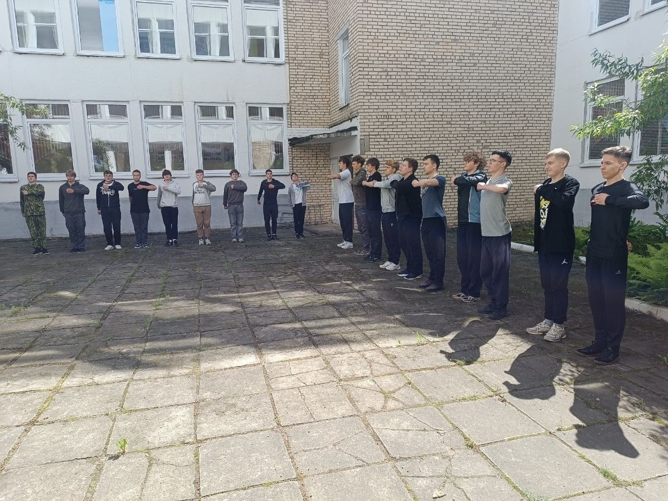
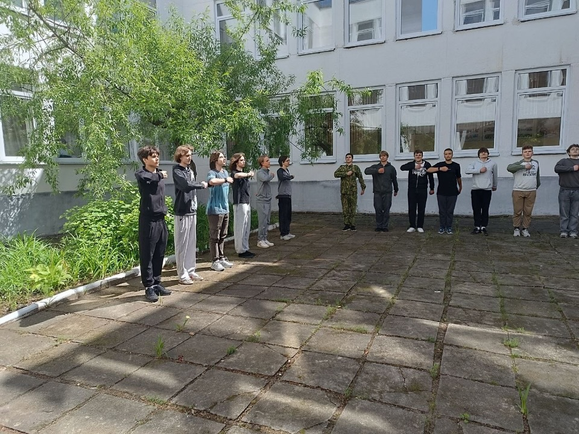
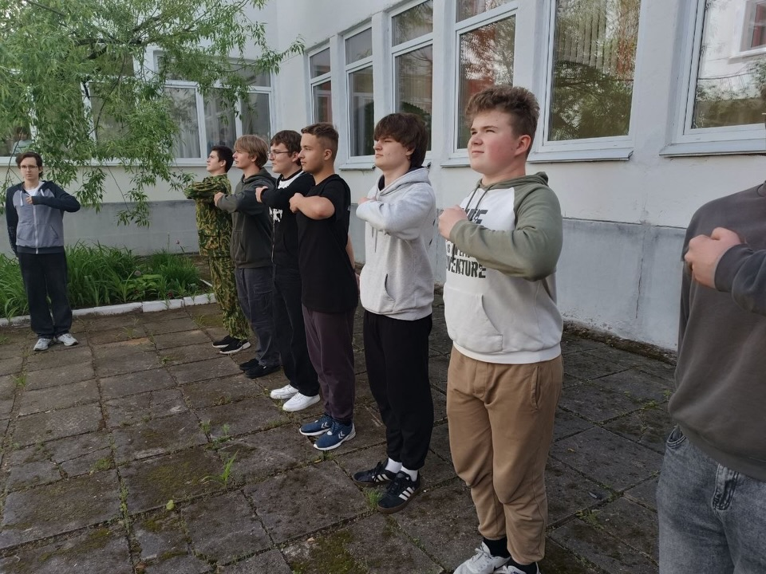
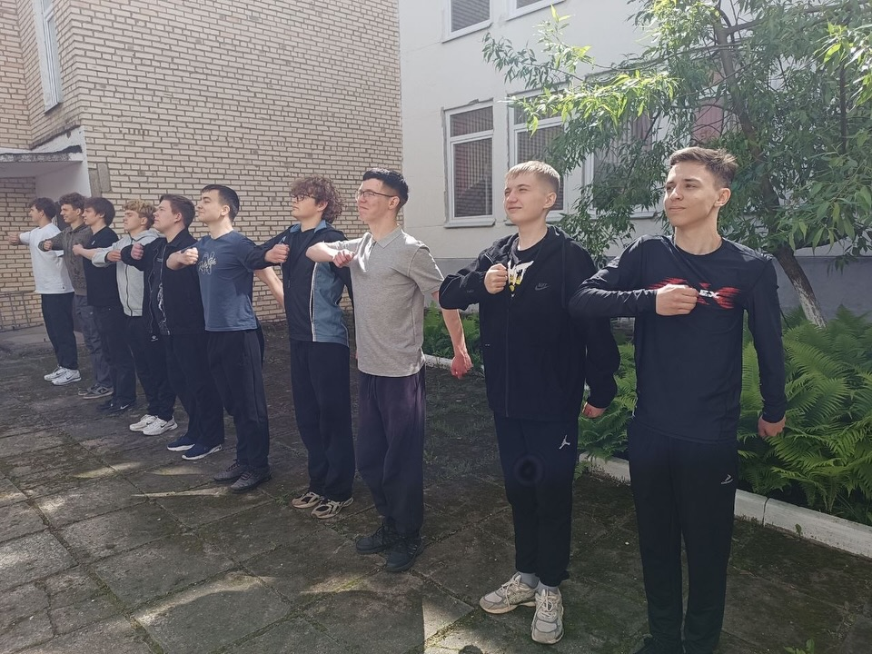
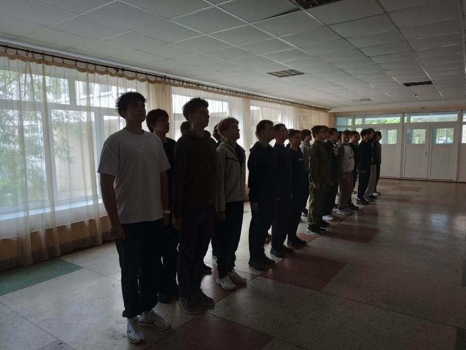

Учебно-полевые сборы десятиклассников: первый день, первые победы
26 мая в ГУО "Гимназия №1 г.Борисова" стартовали традиционные учебно-полевые сборы для учащихся 10-х классов. Это не просто обязательный этап образовательной программы, а важный шаг к взрослению, где теория встречается с практикой, а школьники учатся взаимодействовать в новых условиях.


С утра ребята погрузились в чёткий распорядок дня. Под руководством инструкторов они освоили основы строевой подготовки, изучили правила субординации и распределены по отделениям. Важным этапом стало самостоятельное выдвижение и утверждение командиров — первый осознанный шаг к лидерству и ответственности за других.


Кульминацией дня стала совместная установка полевой палатки УСБ-56. Задание потребовало не только физической выносливости, но и слаженной коммуникации: кто-то крепил растяжки, кто-то выравнивал пол, кто-то координировал действия. Именно в таких моментах рождается настоящее взаимопонимание.

Учебно-полевые сборы формируют не только базовые прикладные навыки, но и характер. Дисциплина, ответственность за свои решения, умение быстро адаптироваться и работать в команде — эти компетенции пригодятся ребятам не только в вузе или на службе, но и в будущей профессиональной деятельности.